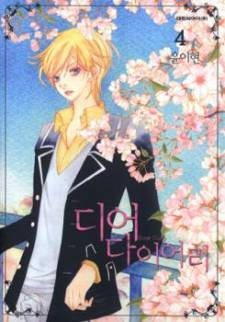

-
Alternative Names: N/A
Author(s): Yoon Lee Hyun
Genres: Drama, Romance, School Life, Shoujo, Slice of Life
Release: 2006
Status: Complete
Type:Manhwa
Length: Volumes Chapters
Read Online @:

More Infor @:

Notes
A Female famous teen star, Hyobi has lived her life as her mom's doll....but now her mom decideds to send her back to high school? Hyobi's confused and is lost at school because she doesn't have a school friend. But when she makes some friends...how will they react to her true identity??